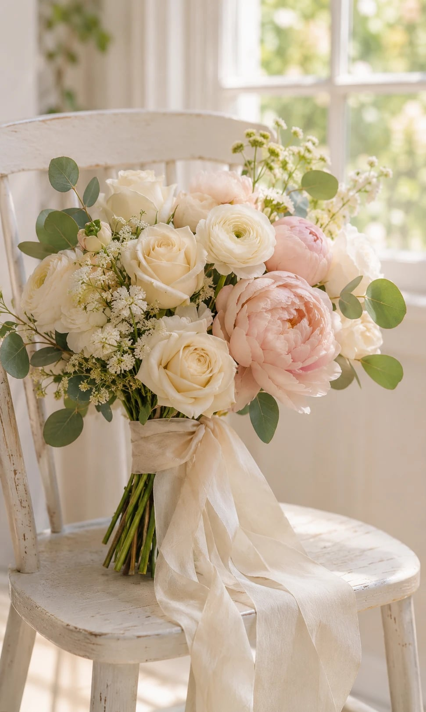
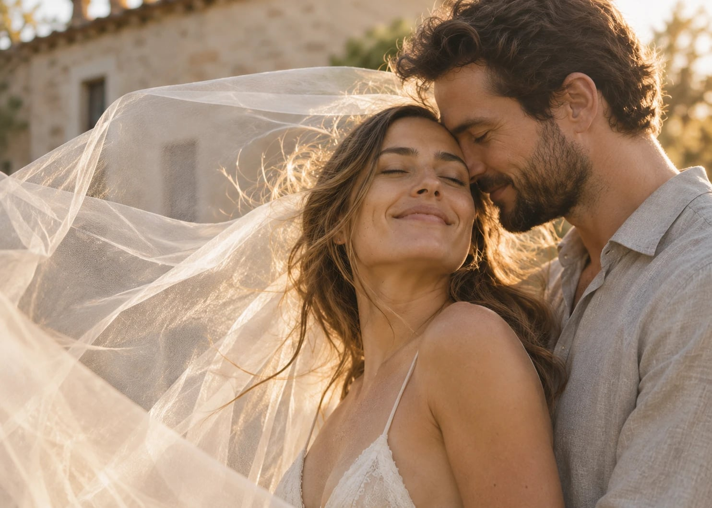
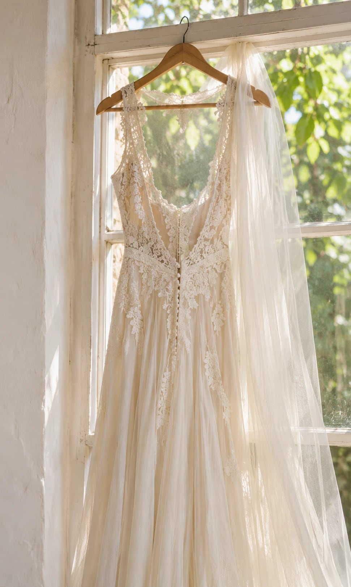
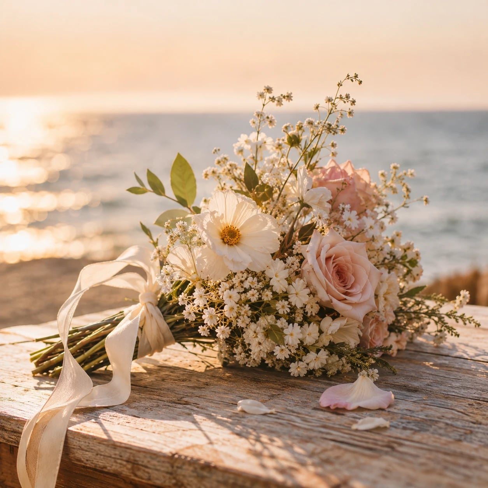
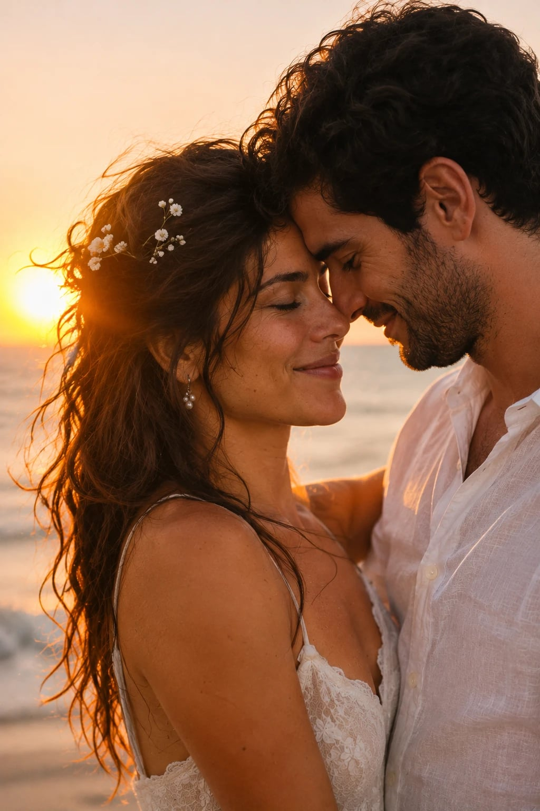
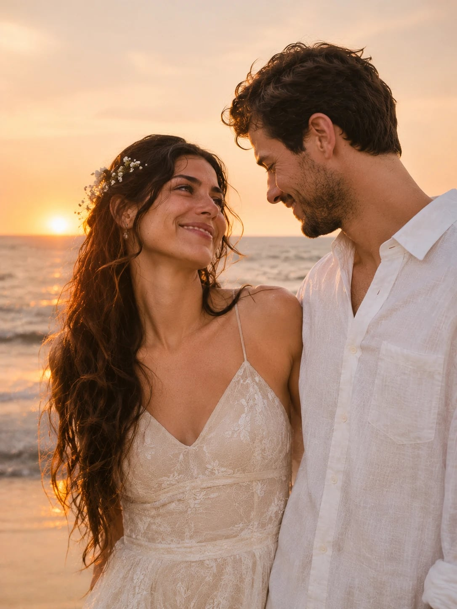
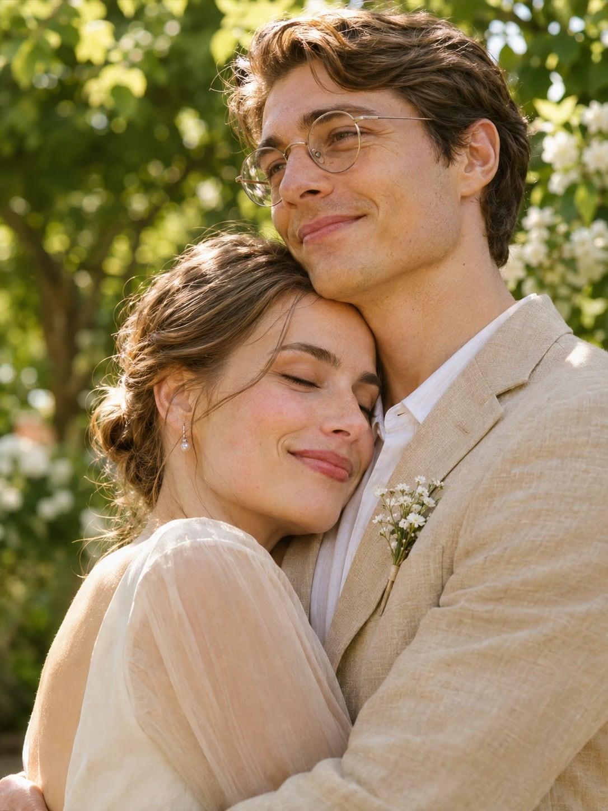
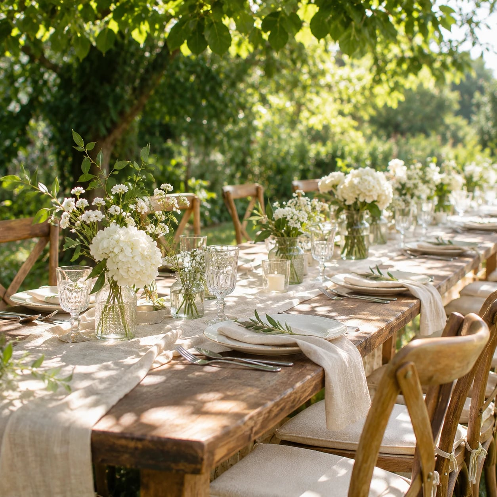
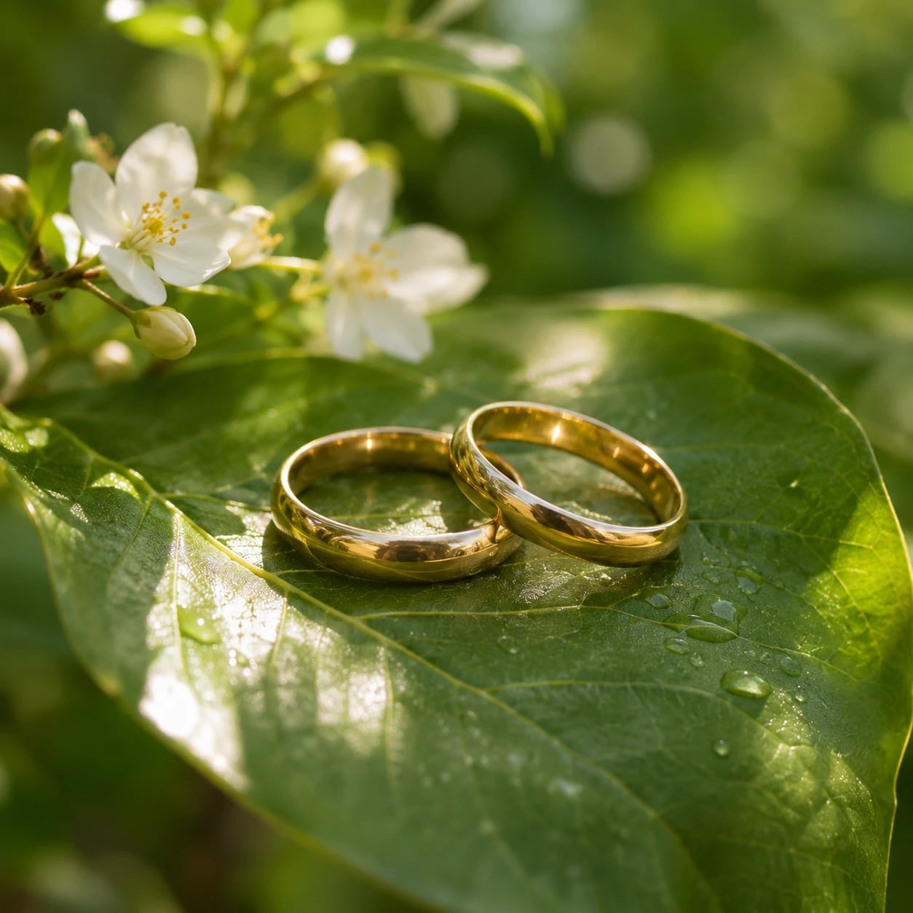

Tu boda, tal como la sentiste
Fotografío bodas con luz natural y sin poses forzadas, para que cuando vuelvas a mirar las fotos sientas otra vez lo que viviste ese día.
Ver paquetesCamila & Mateo
Una boda frente al mar, con los pies descalzos, risas largas y el último sol del día. [Cuenta aquí la historia de la pareja y el lugar.]
Ver galería





Valeria & Andrés
Un matrimonio íntimo entre familia y amigos, con mucha luz y pocos protocolos. [Cuenta aquí la historia de la pareja y el lugar.]
Ver galería¿Hablamos de tu boda?
Cuéntame la fecha y el lugar, y te respondo con disponibilidad y una propuesta a tu medida.
Escríbeme